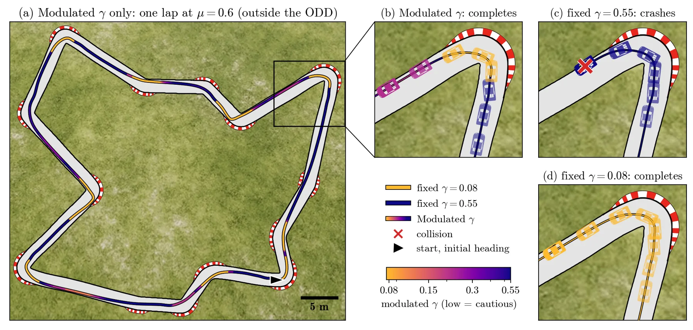

用策略置信度调制安全滤波器的保守度
Confidence-Modulated Safety Filtering for End-to-End Policies
把策略置信度 β 映射到 backup CBF 的 γ：置信高用 γ=0.55 换取圈速，置信低退到 γ=0.08 换安全。60 圈 F1TENTH 试验中，调制版在 μ=1.05 内 60/60 完成、30.2 s，在 μ=0.6 外 60/60 完成、30.8 s，而固定 γ=0.55 在 ODD 外撞 10 圈。
laps completed in ODD
lap time in ODD
crashes beyond ODD
gamma schedule
作者、单位与技术谱系 · Research context
作者与单位
研究脉络
作者关系只写到共同署名与同单位；没有公开证据支持导师/师生关系，因此不推断。
方法本质拆解 · What actually changed
是不是微调？
不是。任务策略是事先训练好的 TD3，安全滤波器用模拟器动力学构造，置信度监控器是策略观测上单独训练的自编码器；三者都不在部署时更新权重。论文做的是运行时调度，不是策略微调。
有没有额外约束？
约束是离散时间 CBF 条件 h(η_{t+1})−h(η_t) ≥ −γh(η_t)：每一步只在满足该条件的动作里选最接近策略输出的那个。γ 越小，允许的 h 下降越少，滤波器越保守；分级家族就是把 γ 排成序。
推理/后端到底做了什么？
每个控制步先算置信度 β，经 Γ 得到 γ，再用当前 γ 的 backup CBF 过滤策略动作；没有全局优化、没有多步 MPC，也没有测试时学习。计算量主要是三种 backup 的可行性检查与自编码器前向。
方法本质是什么？
本质是“用策略置信度选择安全约束的松紧”，把原本固定的保守度变成一个随能力域变化的运行时变量。它改变的是滤波器参数 θ，不改变策略、不改变证书形式；没有做的是识别 ODD 边界本身，也没有证明低置信必然等于高风险。
输入（当前信息状态 + 策略动作 + 自编码器重建误差）→ 置信度 β 经非增调度选出 γ → 用该 γ 的 backup CBF 过滤动作 → ODD 内放松换性能、ODD 外收紧换安全。

桥接价值Bridge
桥接价值
可靠状态估计常被当作“给一个协方差”，但下游决策真正需要的是“当前这条策略/模型还能不能信”。这篇把置信度直接接到安全约束的保守度上，给出了一个可检验的接口：置信度高时放松、低时收紧，而且不要求系统知道 ODD 边界在哪。对我们的价值在于把不确定性从“评估指标”变成“运行时控制量”，并且明确了它的生效条件——低置信必须真的落在高风险处。
方法与模块Method
方法摘要
固定一个基准安全滤波器（fallback、margin-valued monitor、intervention），把保守度参数 θ 排成有序家族，并要求家族成员都满足 filter condition。策略置信度 β∈[0,1] 经非增调度 Γ 映射到 θ，系统执行 φ_θ(η, π_task(η))。实验用 backup CBF：三种 backup 动作（直行刹停、满左、满右），按离散时间 CBF 条件 h(η_{t+1})−h(η_t) ≥ −γh(η_t) 选最接近策略动作的可行解；γ 从 0.08（不信任）到 0.55（完全信任）。置信度是策略自身观测上训练的自编码器重建误差。
可迁移模块
第一是“分级滤波器家族”的形式化：只要保守度可排序、每个成员都满足证书，就能把任意置信度接进来，不必改滤波器内部。第二是固定时间索引的评估思路：在 ODD 内看性能、在 ODD 外看安全，避免把两种诉求混成一个平均分。第三是置信度监控器的选择标准——低置信要尽量落在模型/策略真正失效的地方，否则调制只是在随机收紧。

证据Evidence
关键证据与数字
Table 1（每方法 60 圈）：无滤波在 μ=1.05 内完成 15、撞 45，在 μ=0.6 外完成 0、撞 60。固定 γ=0.08 在两个域都 60/60 完成，圈速 31.4 s / 31.3 s；固定 γ=0.55 在 ODD 内 60/60、30.4 s，但在 ODD 外只有 48 完成、2 超时、10 撞。调制 γ 在 ODD 内 60/60、30.2 s，在 ODD 外 60/60、30.8 s。作者据此说它“在 ODD 内追平最激进、在 ODD 外达到最保守且快 0.5 s”。
边界与下一步Limits & Next Step
边界与风险
证据只在 F1TENTH 仿真：单赛道族、单 TD3 策略、每方法 60 圈，没有真机与跨策略验证。置信度监控器看不到摩擦系数，它的下降来自弯道几何不熟悉，而不是直接感知 μ；作者把这一点当作条件 (ii) 的第一条路径，但也意味着低置信与模型失效只是相关，不是保证。另一个风险是调度 Γ 的形状与 γ 范围是手工选的，换任务需要重标定；论文没有给出跨任务自动校准方法。
下一步实验
第一步把同一框架接到我们的融合定位/导航栈上，用 NIS、协方差迹或观测残差作为 β，看它能否在 GNSS 遮挡或退化场景下自动收紧。第二步做“错位置信”对照：故意把低置信放到安全场景、把高置信放到危险场景，验证性能增益是否真的来自置信与风险的对齐。第三步在真实小车或仿真里增加策略家族与赛道数量，报告每组的完成率、碰撞率与圈速分布，而不是只看 60 圈总数。